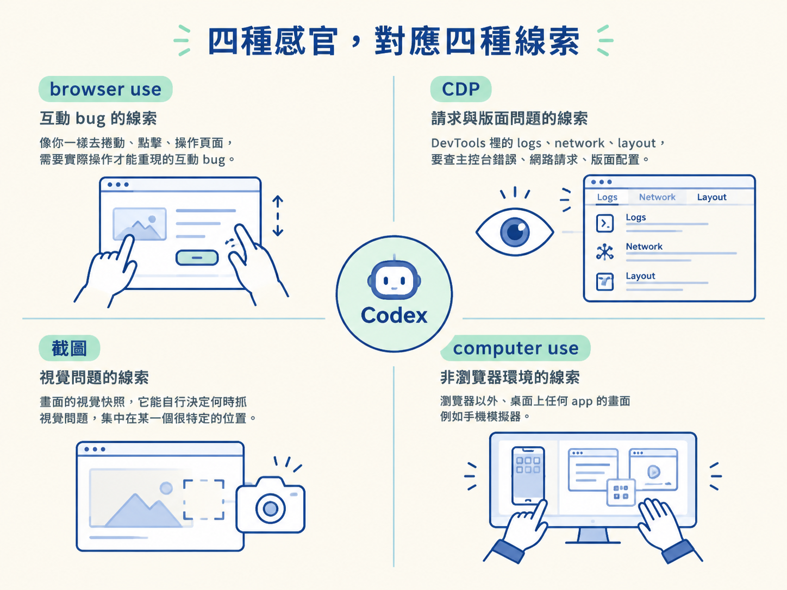
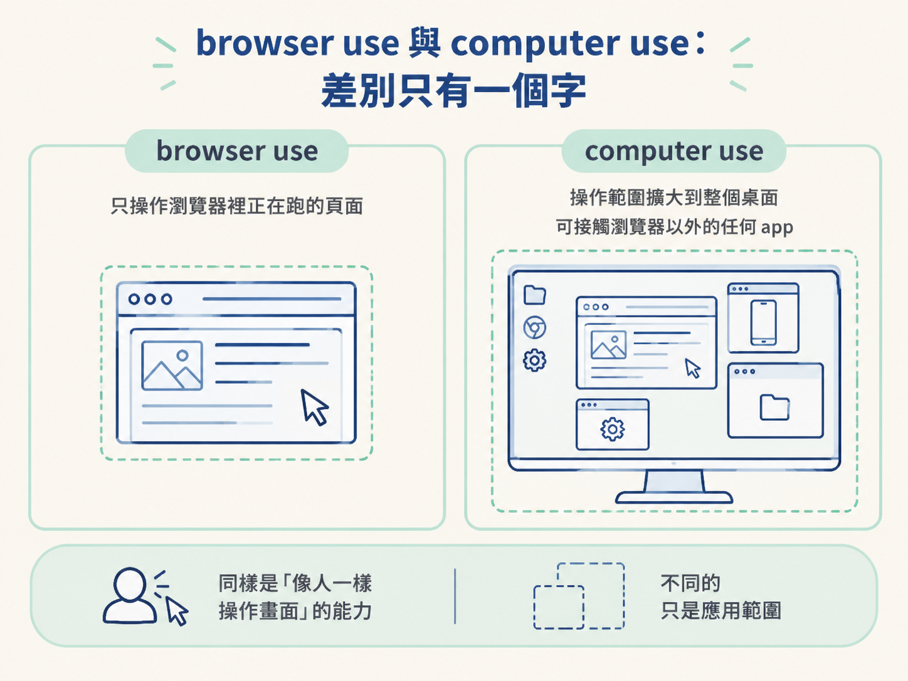
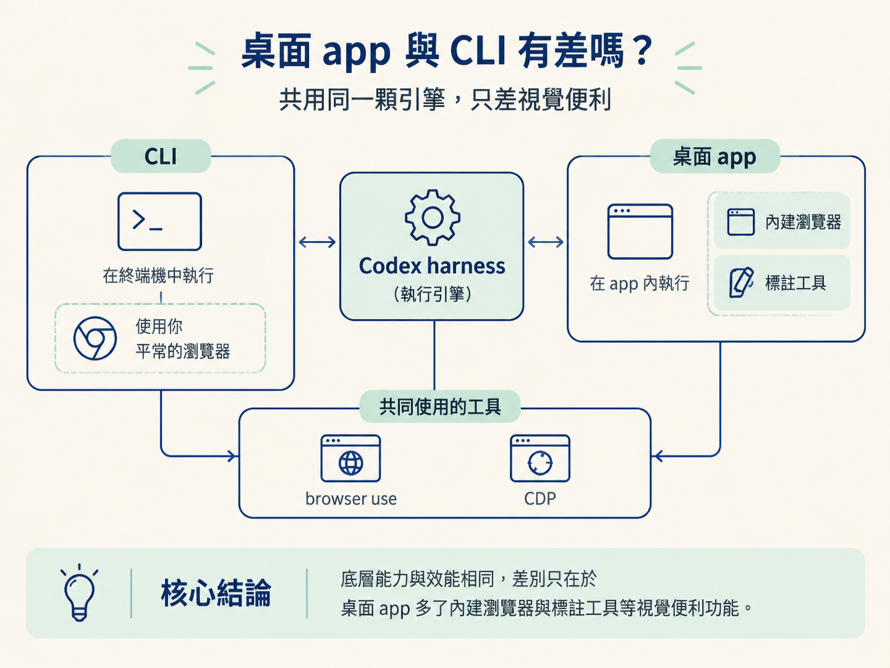

能分辨 browser use、CDP、截圖與 computer use 各自讓 Codex 看到什麼，並說出 browser use 與 computer use 的差別。
你貼一段「這個按鈕按了沒反應」的描述給 Codex，過一陣子它回你：找到原因了，是某個請求沒送出去。這時候你心裡多半會浮上一個疑問：我只給了它幾行字，它又沒有眼睛，到底是去哪裡查出這種細節的？
答案是：它其實有眼睛，而且不只一雙。Codex 手上有一整組工具，讓它能像你一樣操作頁面、打開開發者工具、抓畫面快照，甚至去點瀏覽器以外的視窗。你給的那段文字只是一個起點，剩下的現場它是自己走進去看的。
這一節把這四種工具攤開來看：每一種讓它多看到什麼、什麼時候派得上用場，以及其中兩個名字長得很像的工具到底差在哪裡。看懂這張地圖，你就會知道為什麼有時一句話就夠、有時它會開口跟你要更多資訊。
把這四個工具想成 Codex 裝上的四種感官。除錯時你需要的線索大概就這四類，每一類各有一個對應的工具去取得：
| 工具 | 它讓 Codex 看到什麼 | 什麼時候派上用場 |
|---|---|---|
| browser use | 像你一樣去捲動、點擊、操作頁面 | 需要實際操作才能重現的互動 bug |
| CDP | DevTools 裡的 logs、network、layout | 要查主控台錯誤、網路請求、版面配置 |
| 截圖 | 畫面的視覺快照，它能自行決定何時抓 | 視覺問題集中在某一個很特定的位置 |
| computer use | 瀏覽器以外、桌面上任何 app 的畫面 | 非 web app，例如手機模擬器 |

browser use 是四個裡面最貼近你手上動作的那一個。它會自己判斷「要用哪些維度來看這個 app」，捲動、點擊，把你為了重現問題會做的動作都跑一遍。所以當你只給一段文字描述，Codex 靠的就是 browser use 把那個現象親手跑出來，而不是被動站在那邊等你餵更多細節。
舉個最常見的情況：使用者說「點了沒反應」。這種互動 bug 光看程式碼很難斷定，一定要有人去點那一下才知道壞在哪。browser use 做的就是這件事。
CDP 的全名是 Chrome DevTools Protocol（Chrome 開發者工具協定）。你平常打開 DevTools 看到的那一整套東西（主控台的錯誤訊息、Network 分頁裡的請求、Elements 裡的版面結構），Codex 通通拿得到。
這條線索的價值在於，它讓 Codex 不只看到「畫面怪怪的」，還看得到畫面背後的原因。是不是有一個請求回了 500？是不是某個元素被排到了不該在的層級？CDP 給的是解釋，不是現象。
截圖是視覺上的輸入。Codex 會自己決定什麼時候抓一張畫面快照下來比對，例如「應該長什麼樣」對上「現在長什麼樣」。你也可以主動餵圖給它：如果問題一眼就看得出來、位置又很特定，先丟一張截圖能幫它更快鎖定目標。但這是加分，不是必需，它自己也抓得到。
computer use 把同樣的操作能力延伸到瀏覽器外面。它能存取你電腦上任何 app 的畫面。你要除的 bug 根本不是一個網頁（比方說你在做手機 App，整個東西跑在模擬器裡），你可以讓 Codex 用 computer use 去點那個模擬器，做和 browser use 一模一樣的事：重現、操作、觀察。
這兩個名字很像，能力也很像，真正的差別是範圍。computer use 能存取你電腦上任何 app，而 browser use 只能存取瀏覽器裡正在跑的東西，就像它的名字暗示的那樣。
所以選擇其實很單純：
你除的對象是網頁、是跑在瀏覽器裡的東西，用 browser use 就對了，它更貼合那種情境。對象在瀏覽器外面（模擬器、桌面軟體、任何開得起來的視窗），那才輪到 computer use 上場。兩者甚至可以搭配著用，因為它們其實是同一套「像人一樣操作畫面」的能力，只是套用在不同範圍上。

有些 bug 不是「某個 UI 元素錯了」這麼單純，而是好幾個因素糾纏在一起。比方說某個 library 根本沒正常運作，你連該從哪個方向查都摸不出來。這種時候同樣可以信任 Codex 去把它拿得到的線索全部翻過一遍，自己驗證、自己修好。
這也是前一節說它「會自己繞圈」的原因：它的感官不只一種。畫面看不到就去讀 logs，logs 說不清楚就回到頁面重新操作一次，一層一層把範圍縮小。
這些工具在桌面 app 和 CLI 裡都一樣嗎？底層完全一樣。不管你走的是 CLI、IDE 擴充還是桌面 app，跑的都是同一個 Codex harness（Codex 的執行引擎），效能上沒有差別。
差別在於視覺相關的便利功能。內建瀏覽器和標註工具是桌面 app 專屬的。CLI 一樣可以用 browser use，只是它會發生在你平常那個瀏覽器裡，而不是 app 內嵌的面板。做前端開發時內建瀏覽器特別順手，因為工具都收在同一個地方；但只要你手上有瀏覽器，CLI 一點也沒少掉 browser use 這個能力。

Codex 能自己診斷，是因為它有四種感官：browser use 讓它像人一樣操作頁面重現問題，CDP 讓它看到 DevTools 裡的 logs、network 與 layout，截圖讓它比對畫面，computer use 則把操作能力延伸到瀏覽器以外的任何 app。browser use 只管瀏覽器裡的東西，computer use 能碰電腦上任何 app。桌面 app 與 CLI 跑的是同一顆引擎，差別只在桌面多了內建瀏覽器與標註這些視覺便利。
這四種感官和前面的「重現」是同一個迴圈的兩段：重現負責把問題跑出來，感官負責在跑的過程中蒐集證據。往後你拿到一份 bug 報告時，可以先在心裡分類一次：這是互動問題、是畫面問題、是請求問題，還是根本不在瀏覽器裡？分完類，你就知道該期待 Codex 開哪一雙眼睛去查。下一節我們就用一則「症狀＋期望行為」的 bug 報告，把這套工具真的跑一次，從重現一路走到根因修復。